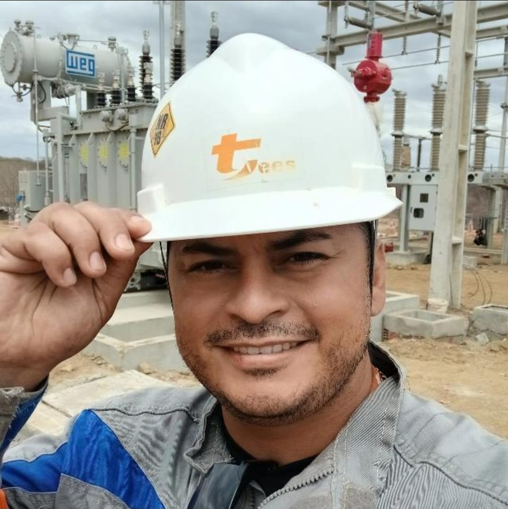
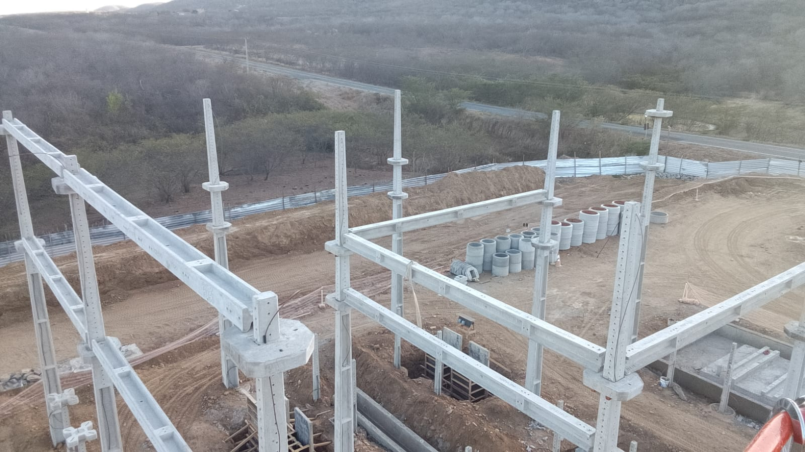
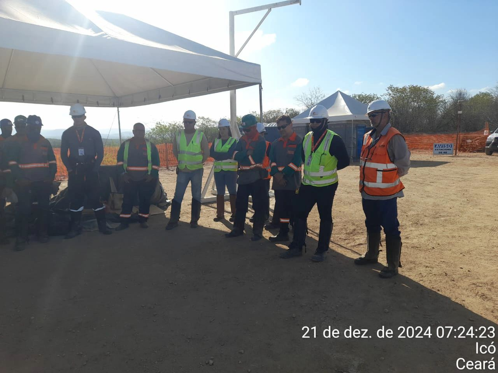
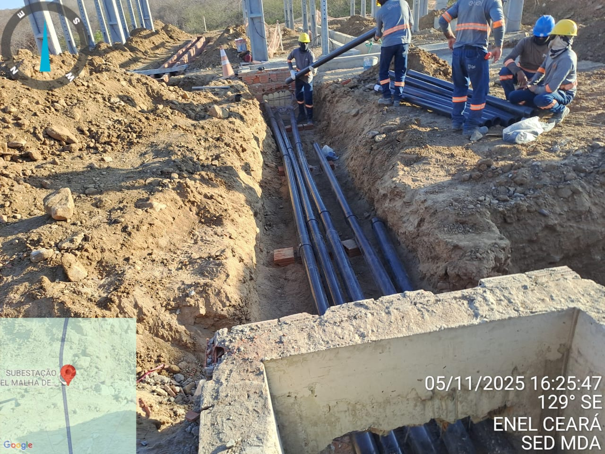
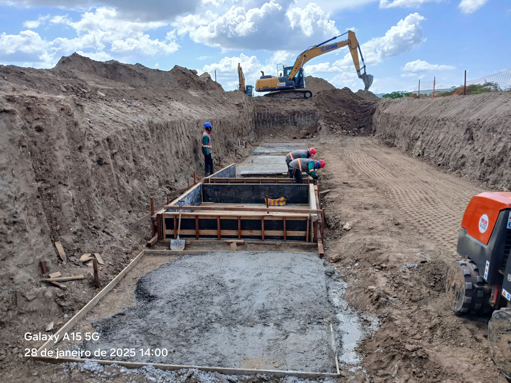
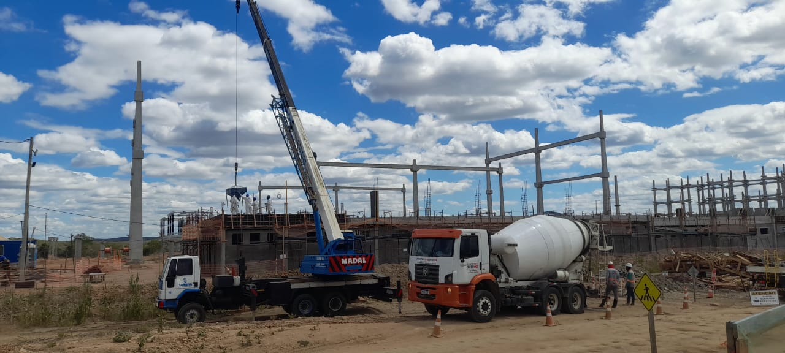

NetoSantos
Mestre de Obras e Eletrotécnico com sólida experiência em Subestações de Alta Tensão e Infraestrutura.
Transformando canteiros de obras com tecnologia, dados e liderança humanizada.
Minha formação é o chão de fábrica e a subestação. Como Mestre de Obras e Eletrotécnico, entendo que o sucesso de um projeto depende de três pilares: Segurança, Qualidade Técnica e Gestão de Pessoas.
Meu diferencial não é apenas saber "tocar a obra", mas trazer inteligência para o processo. Desenvolvo minhas próprias ferramentas digitais para resolver problemas crônicos de comunicação e controle que planilhas comuns não resolvem.
Coordenação de cronograma físico-financeiro, liderança de equipes operacionais e fiscalização rigorosa.
Técnico em Eletrotécnica com foco em montagem eletromecânica de subestações e linhas de transmissão.
Uso de programação (Python) para criar dashboards e relatórios precisos de produtividade.
Setor de Energia e Infraestrutura
Atuo implementando soluções que unem o campo ao escritório. Desenvolvo sistemas de controle de ponto e medição de obra para garantir transparência e dados reais para a engenharia.
Subestações HV e Civil
Responsável direto pela execução de obras civis e eletromecânicas. Gestão de cronograma, leitura de projetos complexos e liderança de equipes multidisciplinares em campo.
Registros de campo: Onde a técnica encontra a prática.

Infraestrutura Civil e Montagem Eletromecânica




Minha experiência em programação serve a um único propósito: Melhorar a gestão da obra. Desenvolvi estas ferramentas para uso próprio e da equipe, visando eliminar papel e erros humanos.
Utilitários desenvolvidos para agilizar o dia a dia no canteiro.
Disponível para gestão de obras, consultoria técnica e implementação de eficiência no canteiro.
francelinotees@gmail.com
Disponível para viagens